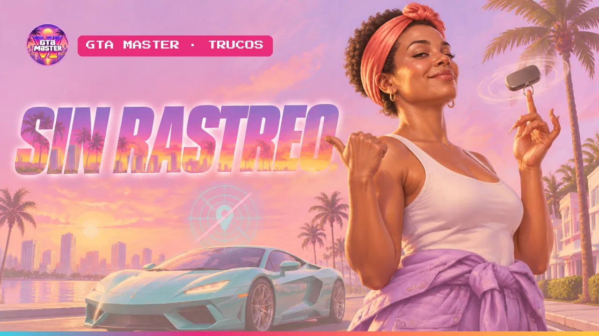

Trucos
Trucos
GTA 6 rastreador avanzado: el truco del compañero para entregar a Randy sin policía

GTA 6 rastreador avanzado: el truco del compañero para entregar los superdeportivos de Randy sin policía, intactos y con bonificación. Paso a paso.
Sí, hay una forma de llevarle a Randy un superdeportivo con rastreador avanzado sin que te persiga media policía de Leonida. El truco consiste en dejar que tu compañero conduzca el coche robado mientras tú vas delante en otro vehículo: mientras lo lleva la IA, el rastreador no salta.
Lo ha documentado Insider Gaming, cuyo editor Grant Taylor-Hill asegura haberlo comprobado «numerosas veces», y Vice lo explicó paso a paso el 26 de noviembre como el «glitch» de los rastreadores avanzados. Funciona en el modo historia, no necesita mods y no afecta a nadie más: solo a tu cartera.
¿Qué es el rastreador avanzado de GTA 6?
Los coches de gama alta de la lista de deseos de Randy llevan un rastreador avanzado. Según Shacknews, ese dispositivo solo emite tu posición cuando circulas despacio: si vas rápido no transmite, pero en cuanto frenas en un cruce la policía recibe la señal y se te echa encima. Por eso la recomendación habitual es planear la ruta y tirar de autopista.
El problema es que Vice City está llena de semáforos, curvas y tráfico, y cada roce rebaja lo que Randy te paga. La vía oficial para quitar el rastreador llega más tarde en la historia, así que hasta entonces cada entrega es una carrera de nervios.
¿Cómo se hace el truco del rastreador avanzado paso a paso?
Necesitas tener la app Key Cloner en el móvil (te la da Randy) y un segundo vehículo para Lucia. Vice recomienda pedir tu coche personal por adelantado con Scooter Bros para tenerlo cerca. Los pasos, según Vice:
- Paso 1: Localiza el coche de la lista de Randy y usa la app Key Cloner del móvil para abrirlo.
- Paso 2: Sube a Jason y a Lucia al coche robado sin tocar el acelerador.
- Paso 3: Mantén pulsada la cruceta a la derecha (igual en PS5 y en Xbox) y elige la orden de que tu compañero espere dentro («Wait In» en la versión inglesa), para que Jason se quede al volante.
- Paso 4: Baja con Lucia y sube a su coche.
- Paso 5: Ya en el coche de Lucia, vuelve a mantener la cruceta a la derecha y elige la orden de seguirte («Follow Me» en inglés). Jason arrancará detrás de ti con el coche robado.
- Paso 6: Conduce hasta el concesionario de Randy. Jason te sigue todo el camino.
- Paso 7: Cuando Jason aparque detrás de ti, cambia al coche robado y entrégalo.
Insider Gaming describe el mismo método con otras palabras: le ordenas al compañero que espere, vuelves a tu coche, le pides que te siga y él toma el control hasta el taller. Según su editor, el rastreador no salta ni siquiera cuando el compañero conduce muy despacio.
¿Por qué da más dinero que hacerlo a mano?
Porque la IA conduce con mucho cuidado. Vice cuenta que el coche llegó sin un solo arañazo y que se llevó una bonificación por entrega perfecta de 30.000 dólares en una de ellas. Según GTABase, la lista de Randy tiene 15 coches, el daño rebaja el pago y algunos modelos, como el Piccia Furia o el Gallivanter Baller ST-D, rondan los 20.000 dólares.
| Método | ¿Salta el rastreador? | Estado del coche | ¿Cuándo está disponible? |
|---|---|---|---|
| Conducir tú el coche robado | Sí, si vas despacio | Depende de tu pericia | Desde el capítulo 3 |
| Truco del compañero | No, según Vice e Insider Gaming | Llega intacto, según Vice | Desde el capítulo 3 |
| Retirada oficial del rastreador | Lo eliminas en un Pay 'n' Spray | Depende de tu pericia | Más adelante en la historia |
¿Cuándo se desbloquea la lista de Randy?
Según GTABase, la lista de deseos se abre en el capítulo 3, después de la misión en la que robas un Granforma Zorrusso y se lo llevas a Randy; al entregarlo recibes la app Key Cloner. La retirada oficial del rastreador llega después: Vice la sitúa tras la misión «Photo/Shoot» del capítulo 4 y la entrega del Declasse Mamba GT, y Shacknews y GTABase coinciden en que el encargo del Mamba es lo que hace que los Pay 'n' Spray empiecen a registrar y comprar estos coches. Es decir, el truco te sirve justo en el tramo en el que más falta hace.
¿Dónde se hace el truco del rastreador avanzado?
Donde esté el coche que te pide Randy: los modelos de la lista están repartidos por Leonida, y el trayecto acaba en el concesionario de Randy, que GTABase sitúa en Balsero, con una gasolinera justo al norte donde puedes reparar el coche antes de entregarlo. Insider Gaming lo probó en las calles estrechas de Vice City. Para planear la ruta, abre el mapa interactivo de GTA 6.
¿Lo parcheará Rockstar?
No hay nada oficial. El propio editor de Insider Gaming sospecha que es un fallo y no una función pensada, y Vice lo llama glitch, así que lo prudente es aprovecharlo mientras dure: Rockstar ya ha corregido cosas en las primeras actualizaciones, como te contamos en las notas del parche 1.002.002. Si deja de funcionar tras un parche, te tocará volver a la autopista y esperar a desbloquear la retirada oficial.
Si te gustan estos atajos, tienes más en el glitch que activa la primera persona, en la sección de trucos de nuestra guía de GTA 6 y en la ficha de personajes de GTA 6 para saber quién es quién entre Jason y Lucia.
No hemos encontrado todavía un vídeo que enseñe el truco del compañero, pero si prefieres la vía oficial, el canal EGL explica cómo vender o registrar los coches con rastreador avanzado:
Y para no tirar a la basura lo que ganas con Randy, repasa nuestro vídeo con los 5 errores que te hacen perder dinero en GTA 6:


Comentarios
Los comentarios funcionan con Disqus: puedes entrar con Google, Facebook, X o tu email. Al pulsar el botón se conecta con Disqus, que usa sus propias cookies. Más información en nuestra política de privacidad.